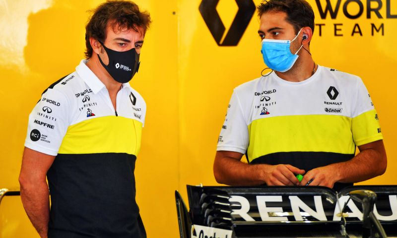
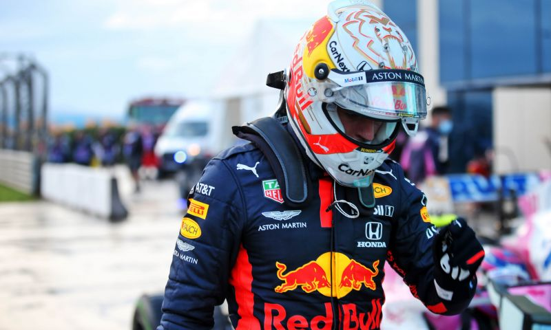

-
'Boris Johnson mengt zich in de discussie of Hamilton geridderd moet worden'
Trage SF1000 heeft Leclerc geholpen:'Het lijkt nu beter te gaan'
Schumacher ondank lange break klaar voor titelstrijd:'Voor idereen hetzelfde'
F1 2020
Keuze van de Redactie
Lees hier de belangrijkste analyses en verslagen van GPblo.com
-

De Jong: "Ik weet ook zeker dat Red Bull daarnaar kijkt"
2020-11-22 22:30 -
Hoe laat begint de Grand Prix van Bahrein 2020?
2020-11-22 21:30 -
Grand Prix van Turkije maakt rijderskeuze Red Bull Racing alleen maar moeilijker
2020-11-22 18:24 -
Welke coureur rijdt het meeste schade? Geen grote kosten voor de teams na Turkije
2020-11-22 10:44 -
Waar kan Albon heen in 2021? Kansen in F1 lijken af te nemen
2020-11-21 19:59 -
Tsunoda op weg naar F1: Welke Japanners gingen hem voor?
2020-11-21 10:20 -
Analyse | Hoeveel talent heeft de opleiding van Red Bull in 20 jaar opgeleverd?
2020-11-21 08:39 -
 Column: Renault en Alonso maken zich opeens ernstig zorgen om 'overgangsjaar' 2021
2020-11-19 10:58 -
 Column | 'Regenkoning' Verstappen misschien toch niet de allerbeste in de regen
2020-11-16 12:10